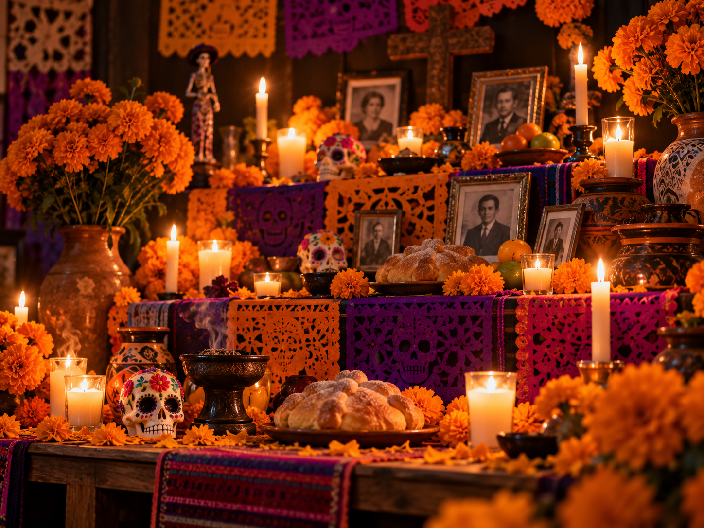
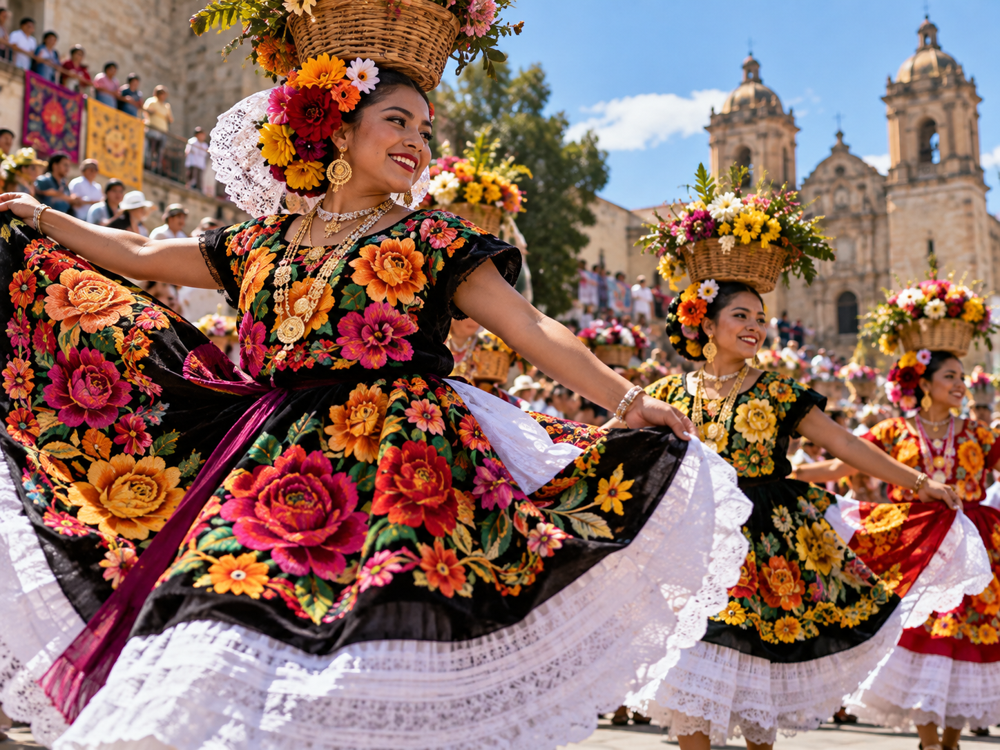

Origin and Meaning of Day of the Dead
An ancestral celebration blending Indigenous roots and Catholic tradition to remember and honor those who are gone. Each altar tells a family story through objects, food and photographs.
[ Cultural archive / 002 ]
Discover the festivities that gather memory, community and artistic expression across Mexico.

An ancestral celebration blending Indigenous roots and Catholic tradition to remember and honor those who are gone. Each altar tells a family story through objects, food and photographs.
The marigold guides souls with color and scent, while the ofrenda gathers water, candles, bread, salt and memories — a visual language of welcome and affection.

In Oaxaca, the Guelaguetza celebrates cooperation and diversity. Dances, costumes and music carry living stories from Mexican regions.
[ Next experience ]
Discover how traditional cuisine is part of every celebration.